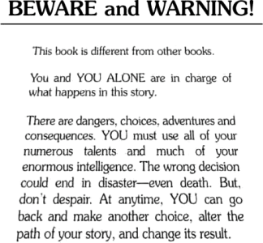

Twee is a tool for writing hypertext. But what does that mean? Maybe you've seen something like this notice that was at the beginning of a book called Journey Under the Sea:

Journey Under the Sea is a Choose Your Own Adventure, and depending on when you were born, is probably an example of hypertext that you're very familiar with. (It's also one of the most accessible forms of hypertext.) In these stories, the narrative is broken up into individual pages. When you reach the end of one, you get directions on what page to turn to next. Sometimes it tells you to go on to the next page, just like in a regular story. But other times it gives you the thing that defines hypertext: a choice.
In the case of Choose Your Own Adventures, you get to choose what the story's protagonist will do next. But this is only one kind of choice that a reader can make in hypertext.
These examples are just a sample of the possibilities in hypertext. There are as many kinds of ways a text can branch as there are writers.
Keep in mind that hypertext is best described as a medium, not a genre. There can be hypertext fiction, nonfiction — even poetry. But in this document we'll talk about hypertext prose.